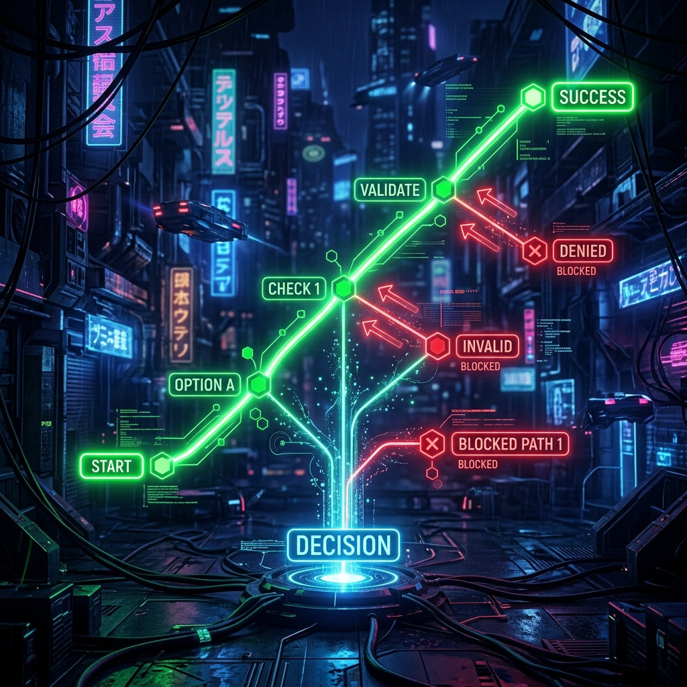
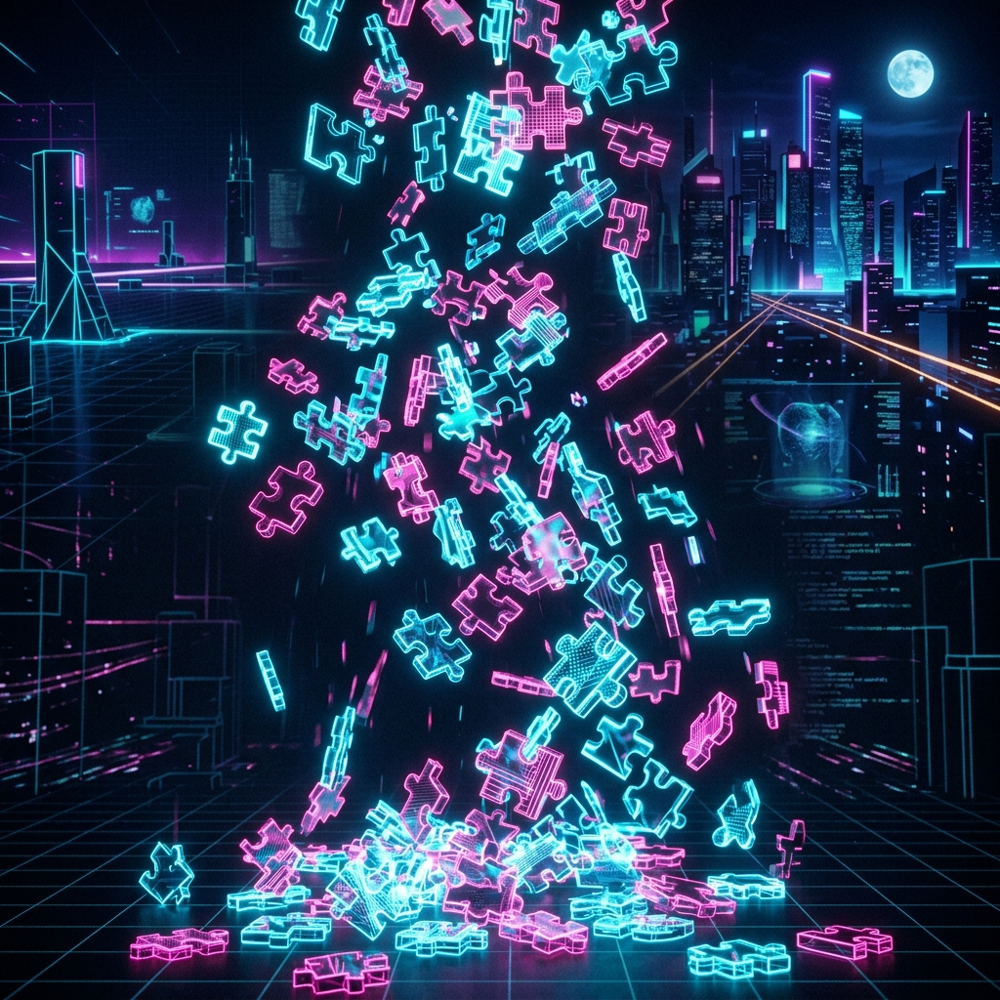

Backtracking · Recursion · 2D Arrays
The Sudoku board is stored as an N×N 2D Array (Matrix). Rows, columns, and subgrid boxes are traversed and validated using simple mathematical row/column coordinate offsets.
(row, col).function isValid(board, r, c, val, cfg) {
const n = cfg.size, bR = cfg.bR, bC = cfg.bC;
for(let i=0; i<n; i++){
if(i!==c && board[r][i]===val) return false;
if(i!==r && board[i][c]===val) return false;
}
const sr = Math.floor(r/bR)*bR, sc = Math.floor(c/bC)*bC;
for(let i=sr; i<sr+bR; i++)
for(let j=sc; j<sc+bC; j++)
if((i!==r||j!==c) && board[i][j]===val) return false;
return true;
}The solver divides the global grid into smaller, identical cell-level subproblems. Each recursive call attempts to solve the board starting at the next empty slot, building a search path.
function solve(board, cfg) {
const cell = findBestEmpty(board, cfg);
// Base case: board is fully filled
if(!cell) return true;
const [r,c] = cell;
// Try candidate values recursively...
}
Backtracking explores possible numbers. If a path violates constraints, the algorithm "backtracks" (rewinds) by resetting the cell value to 0, pruning the path and trying the next choice.
for(const s of syms) {
if(isValid(board,r,c,s,cfg)) {
board[r][c] = s; // Make choice
if(solve(board,cfg)) return true;
board[r][c] = 0; // Backtrack (undo choice)
}
}The Minimum Remaining Values (MRV) heuristic identifies the cell with the fewest valid candidate numbers (the most constrained cell) and solves it first.
function findBestEmpty(board, cfg) {
let best=null, min=cfg.size+1;
for(let r=0; r<cfg.size; r++) {
for(let c=0; c<cfg.size; c++) {
if(board[r][c]===0) {
let cnt=0;
for(const s of cfg.syms)
if(isValid(board,r,c,s,cfg)) cnt++;
if(cnt<min){ min=cnt; best=[r,c]; }
if(cnt===0) return best; // Fail early
}
}
}
return best;
}The application tracks moves using a Stack (LIFO - Last In, First Out). Every cell entry pushes a state item onto the stack, enabling sequential move rollbacks.
function handleUndo() {
if (S.history.length === 0) return;
const move = S.history.pop(); // Pop from stack
S.board[move.r][move.c] = move.old;
drawBoard();
updateStats();
}
Unbiased random puzzle generation is powered by the Fisher-Yates Shuffle. It randomly permutes coordinates and candidates to generate puzzles.
function shuffle(a) {
for (let i = a.length - 1; i > 0; i--) {
const j = Math.floor(Math.random() * (i + 1));
[a[i], a[j]] = [a[j], a[i]]; // Swap elements
}
}Sudoku can be modeled as the Graph Vertex Coloring Problem. Cells represent vertices, and edges represent constraint relationships in rows, columns, or subgrid cliques.
// Verifies if vertex color val clashes
// with adjacent graph neighbor nodes:
for(let i=0; i<cfg.size; i++) {
if(i!==c && board[r][i]===val) return false;
if(i!==r && board[i][c]===val) return false;
}The backtracking algorithm found the solution.